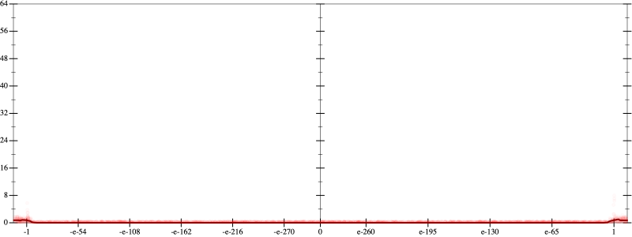
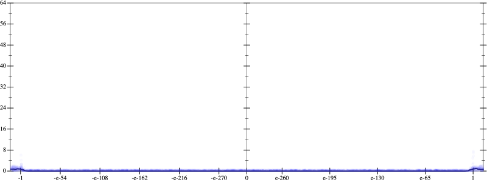
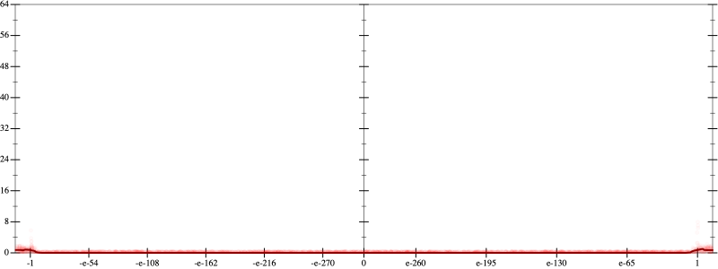
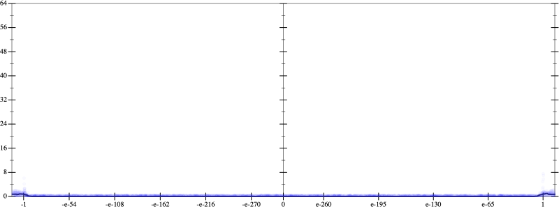
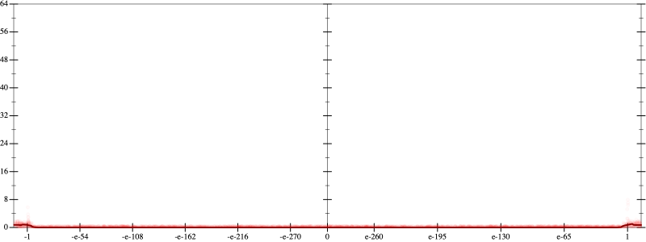
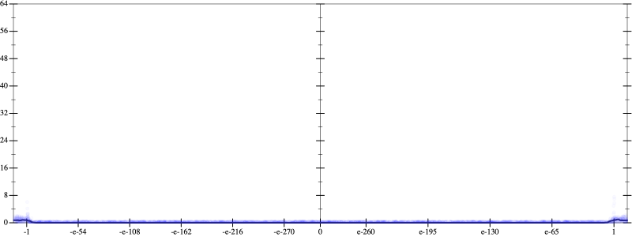

Error
 
Bits error versus x
Bits error versus x
Results
Initial program 0.0
Time bar (total: 32.0s)Debug log
herbie shell --seed 1000236972
(FPCore (x)
:name "10"
:pre (and (>= x -1e+14) (<= x 1e+14))
(+ (+ (+ (+ (+ -0.246094 (* 13.535156 (* x x))) (* -117.304688 (* (* (* x x) x) x))) (* 351.914062 (* (* (* (* (* x x) x) x) x) x))) (* -427.324219 (* (* (* (* (* (* (* x x) x) x) x) x) x) x))) (* 180.425781 (* (* (* (* (* (* (* (* (* x x) x) x) x) x) x) x) x) x))))